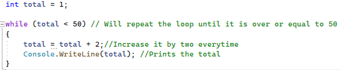
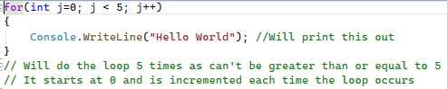
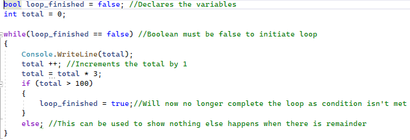
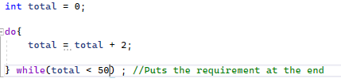

Loops are vital for programmers to instruct the computer to iterate (repeat a pattern) for some time. This period can be a set amount of times or a condition amount of times. This is where we have our two types of loops, for and while loops. A for loop is a set amount of times that the program is set to loop for. For example, we can instruct the computer to print out "Hello World" 5 times using a for loop as it is a set amount of times. A while loop is a condition-controlled loop, this means that it will iterate until a condition is met. For example, we may add up a set pattern and print it out one by one until this pattern is greater than 20 then we would stop the loop as the condition has been met. Now that you have an idea of what these loops are let's try to make some.
The first loop we will construct is a while loop. The while loop acts similarly to an if statement which we learned in chapter 3 where a requirement has to be met. In this example, I will construct a loop that prints the total of a pattern until the total is greater than 50. Firstly, we must declare the variable that we are going to use within the requirement so that the program understands what we are doing which in this case, will be int total = 1;. Now, let's make our requirements. Next, we need to declare what type of loop this is so we write while . Then we need to act on our requirement which will be (total < 50), this is because we want our loop to iterate while the total is less than 50 and when it isn't it will not meet the requirement hence, it will not print. Remember that our condition must be met every time if we want to make our code inside our loop work so don't just make it equal to 0 or it will only occur once! Next, we use curly brackets {} to execute the code we want when our condition is met, (a tip from me is to type { then enter then it should automatically format it for you however, remember to keep everything correctly formatted and within the same column when indented). After, we can then print the code inside that we want the code to execute. I'm going to make it so that the total is incremented by 2 every time and then I will print it every time. Let's try this out:

As you may have noticed, it has printed 51! However, this is not an error as our condition was met. This is because our total was 49 and consequently it met our conditions. Then we added another 2 to it and then we printed it giving us 51. After, it did not iterate again as the total was greater than 50. This is called a logic error as it did not do what we intended it to do however, this can easily be fixed using an if statement where it will only print if the total is less than 50 or reversing the order in the code by switching the printing and increasing the total. While loops can also be used for strings. For example, a game where when the user's input is not equal to the password then you have to enter it in again. However, let's now move on to a for statement.
As I mentioned earlier a for loop is used to iterate a phrase for a set period of amounts. Firstly, we declare what type of loop it is by writing for then inside brackets we will write our requirements. Then we need to declare our starting point variable within the brackets. For example, int j = 0 which shows our starting point is at 0. Next, we separate it using a semi-colon and then we put how many times we want to do this (which is done similarly to a while loop). For example, if we want to do it 5 times then we need to make j < 5 as it will do the loop while j is less than 5. Finally, (separating it using a semi-colon again) we show what we are incrementing our variable by each time which in this case is 1 which can be represented using j++ (which is a shortened version of j+1 each time). Then within our curly brackets, we can write the code we want to. This type of loop will not work with strings as it is not a condition-controlled loop that can contain a word variable as it is incremented by numbers. Though this may seem complicated it becomes easier once you experiment with it so let's try it out:

Now that we know how to use loops we can use them to validate if the user's input is acceptable, we can do this by using a character type called Boolean . The character type can only store two types - true or false . For example, we can have bool loop_1 = false (bool declares that it is a Boolean data type to the program) which shows it has not been completed (and use it as the condition/requirement) then when we want to end the loop we can use bool loop_1 = true. This can be useful for stopping a loop at an exact point instead of using multiple set conditions within loops. Here's an example of how to use the Boolean data type:

As well as this way of formatting the loop we can use the do loop format. This means that instead of placing our requirements at the start all we write is do and then the curly brackets with the code inside. Then after our curly bracket and on the outside of it, we write our requirement which can only be while loop loop. All this does is place our requirement at the end instead of at the start which at times can be useful. For example:

User Challenge: Create a program that uses while or for loops and if statements. For example, a password cracker where you only have 10 attempts, if you're stuck look here for inspiration.